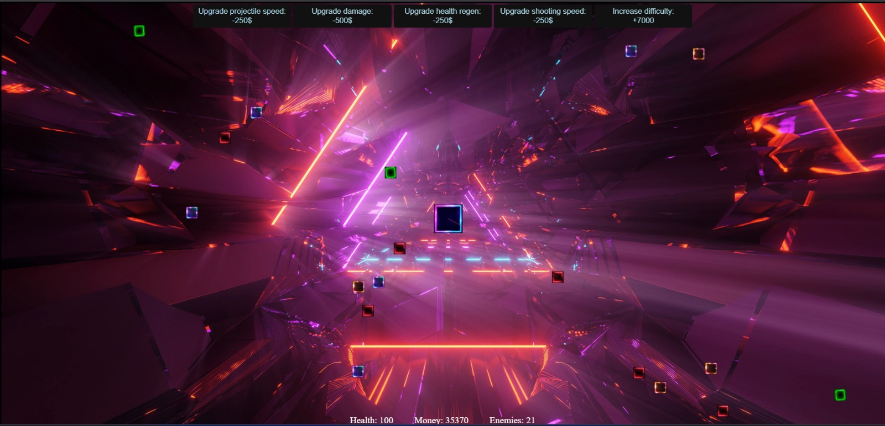
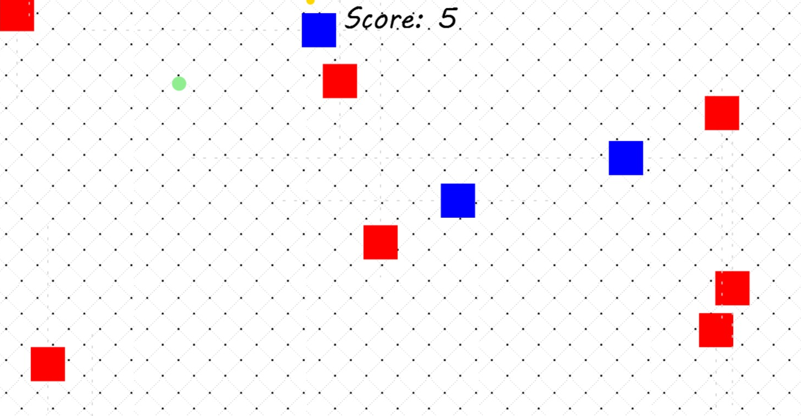
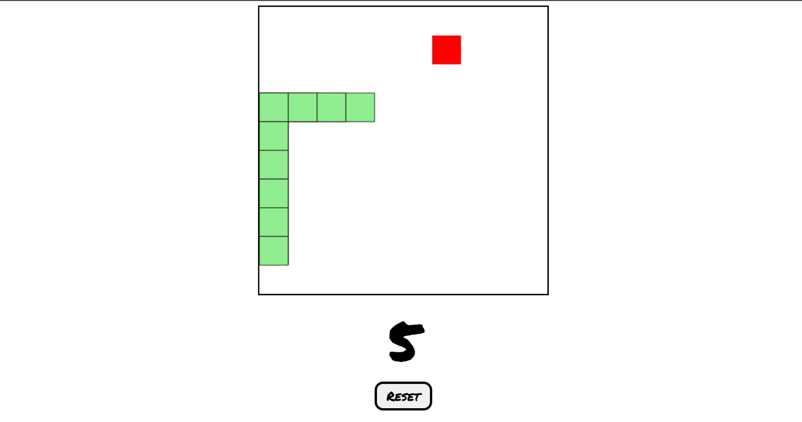
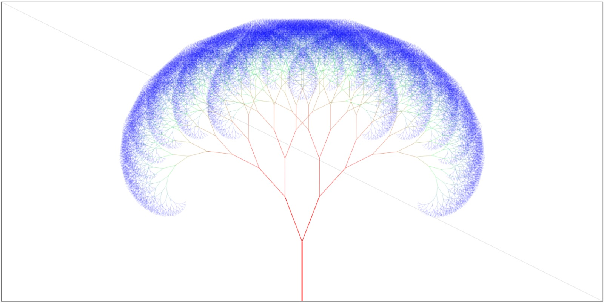
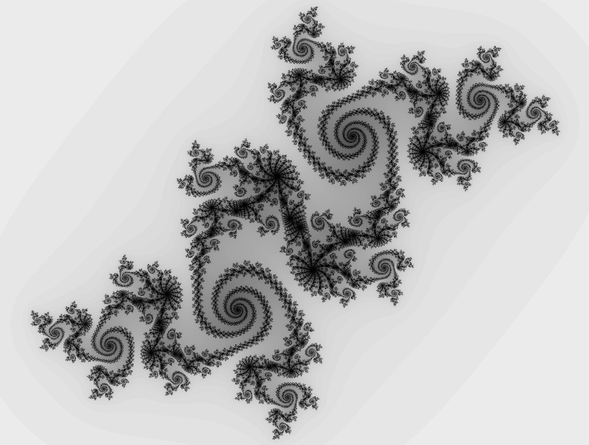
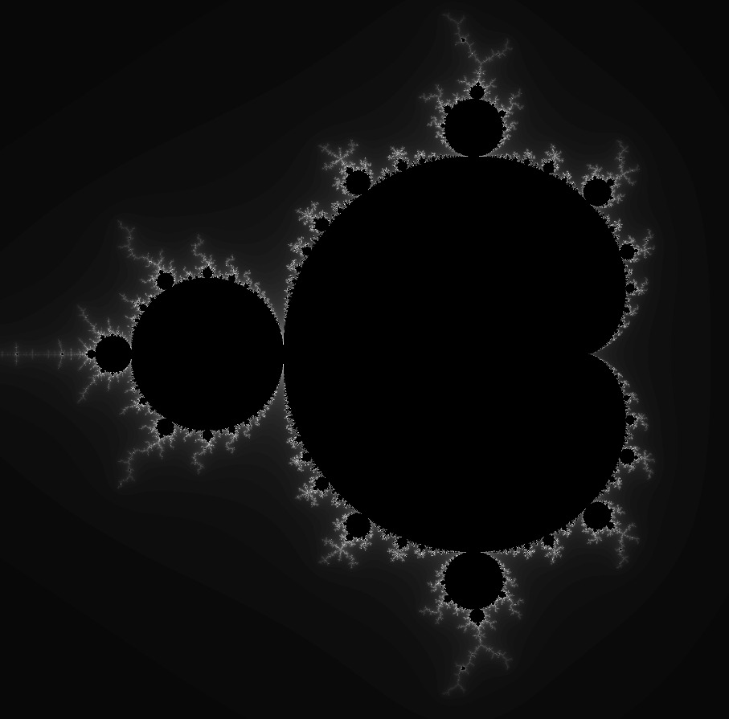

My smaller web projects (2022 - 2024)
Games

BTD0
This is my proudest project so far: a recreation of the popular mobile and PC game Bloons TD 6 (BTD6). It’s a tower defense game in which players place towers ("monkeys") to pop the enemies ("bloons") before they reach the end of the track. Bloons appear in many types, each with different speed and durability. Some split into weaker bloons when popped, while tougher ones break into multiple layers. Towers can be upgraded along different paths, with each upgrade offering more power at a higher cost.
My version includes three tower types that can be placed using hotkeys: the Dart Monkey (Q), the Tack Shooter (W), and the Banana Farm (E).
This is my proudest project so far: a recreation of the popular mobile and PC game Bloons TD 6 (BTD6). It’s a tower defense game in which players place towers ("monkeys") to pop the enemies ("bloons") before they reach the end of the track. Bloons appear in many types, each with different speed and durability. Some split into weaker bloons when popped, while tougher ones break into multiple layers. Towers can be upgraded along different paths, with each upgrade offering more power at a higher cost.
My version includes three tower types that can be placed using hotkeys: the Dart Monkey (Q), the Tack Shooter (W), and the Banana Farm (E).

Don't Miss It
Don’t Miss It is a fast-paced reaction game where your goal is to catch falling items before they hit the ground. You control a square-shaped player that moves horizontally across the screen, affected by gravity and wall collisions. Press the spacebar to jump and navigate through the falling “food” objects.
Each item you catch increases your score, while letting any object slip past the bottom ends the game. Some items are rare and give extra points, while others require extra skill to catch. The challenge grows as items spawn more frequently, testing your reflexes and timing.
Don’t Miss It is a fast-paced reaction game where your goal is to catch falling items before they hit the ground. You control a square-shaped player that moves horizontally across the screen, affected by gravity and wall collisions. Press the spacebar to jump and navigate through the falling “food” objects.
Each item you catch increases your score, while letting any object slip past the bottom ends the game. Some items are rare and give extra points, while others require extra skill to catch. The challenge grows as items spawn more frequently, testing your reflexes and timing.

Defend!
Tower Defense is an engaging strategy game where you control a powerful central tower and defend it against waves of approaching enemies. Players must manage resources, upgrade their tower, and eliminate enemies before they reach the base.
Enemies spawn continuously and increase in speed, health, and frequency over time, challenging your reflexes and planning skills. The tower automatically targets the closest enemy, firing projectiles to destroy them, while you earn money to upgrade shooting speed, projectile damage, tower health regeneration, and more.
With intuitive upgrades, escalating difficulty, and a focus on strategy and timing, Tower Defense offers endless replayability as you strive to survive ever-growing waves of enemies.
Tower Defense is an engaging strategy game where you control a powerful central tower and defend it against waves of approaching enemies. Players must manage resources, upgrade their tower, and eliminate enemies before they reach the base.
Enemies spawn continuously and increase in speed, health, and frequency over time, challenging your reflexes and planning skills. The tower automatically targets the closest enemy, firing projectiles to destroy them, while you earn money to upgrade shooting speed, projectile damage, tower health regeneration, and more.
With intuitive upgrades, escalating difficulty, and a focus on strategy and timing, Tower Defense offers endless replayability as you strive to survive ever-growing waves of enemies.

Space Invaders Demo
This "Space Invaders" recreation is a fast-paced arcade shooter where you control a lone spaceship being attacked by waves of alien invaders. Move your ship left and right and unleash a barrage of bullets and rare rockets to destroy the advancing enemies.
Enemies appear in rows, move side to side, and descend gradually, increasing the tension as the game progresses. Hit enemies multiple times to eliminate them, score points, and survive the onslaught. Watch for rare powerful projectiles that give you an edge in intense moments.
Pay close attention to enemy movements, as the key to victory is understanding their spawning patterns.
This "Space Invaders" recreation is a fast-paced arcade shooter where you control a lone spaceship being attacked by waves of alien invaders. Move your ship left and right and unleash a barrage of bullets and rare rockets to destroy the advancing enemies.
Enemies appear in rows, move side to side, and descend gradually, increasing the tension as the game progresses. Hit enemies multiple times to eliminate them, score points, and survive the onslaught. Watch for rare powerful projectiles that give you an edge in intense moments.
Pay close attention to enemy movements, as the key to victory is understanding their spawning patterns.

MMM Cursors
"MMM Cursors!" is a recreation of the mobile arcade game "MMM Fingers" in which you control a small cursor, dodging moving obstacles while collecting coins to increase your score. Use your mouse to guide the cursor across the game board, avoiding enemies that move horizontally and vertically, each following unpredictable patterns.
Collect coins for points while staying alert—one collision with an enemy ends the run. The game rewards quick reflexes, precise mouse control, and strategic movement to survive as long as possible.
With simple controls, dynamic enemy movement, and random coin spawns, every playthrough is a unique challenge.
"MMM Cursors!" is a recreation of the mobile arcade game "MMM Fingers" in which you control a small cursor, dodging moving obstacles while collecting coins to increase your score. Use your mouse to guide the cursor across the game board, avoiding enemies that move horizontally and vertically, each following unpredictable patterns.
Collect coins for points while staying alert—one collision with an enemy ends the run. The game rewards quick reflexes, precise mouse control, and strategic movement to survive as long as possible.
With simple controls, dynamic enemy movement, and random coin spawns, every playthrough is a unique challenge.

Snake
This classic Snake game challenges players to guide a growing snake around a grid-based game board. Navigate carefully using the arrow keys or WASD, collect the red food blocks to increase your score, and watch your snake grow longer with each bite.
Avoid colliding with the walls or your own tail — any mistake ends the game instantly. Choose from multiple difficulty levels to test your reflexes, from a relaxed pace for beginners to a fast-moving challenge for seasoned players.
The game rewards strategic planning, quick thinking, and precise movements. Can you achieve the highest score and survive as your snake grows longer and longer?
This classic Snake game challenges players to guide a growing snake around a grid-based game board. Navigate carefully using the arrow keys or WASD, collect the red food blocks to increase your score, and watch your snake grow longer with each bite.
Avoid colliding with the walls or your own tail — any mistake ends the game instantly. Choose from multiple difficulty levels to test your reflexes, from a relaxed pace for beginners to a fast-moving challenge for seasoned players.
The game rewards strategic planning, quick thinking, and precise movements. Can you achieve the highest score and survive as your snake grows longer and longer?
Math Challenges

Fractal tree
This interactive fractal tree visualizes recursion and branching patterns. Starting from a single trunk, each branch splits into two smaller branches, forming a tree-like structure. Branch colors transition smoothly from red to green to blue, and branch thickness decreases with depth to create a natural look.
You can interact with the tree in real time: moving the mouse adjusts the branching angles, while clicking increases the recursion depth, adding more branches and leaves. It's a dynamic way to explore fractals, geometry, and the beauty of recursive structures.
This project demonstrates fractals while illustrating the principles of trigonometric functions.
This interactive fractal tree visualizes recursion and branching patterns. Starting from a single trunk, each branch splits into two smaller branches, forming a tree-like structure. Branch colors transition smoothly from red to green to blue, and branch thickness decreases with depth to create a natural look.
You can interact with the tree in real time: moving the mouse adjusts the branching angles, while clicking increases the recursion depth, adding more branches and leaves. It's a dynamic way to explore fractals, geometry, and the beauty of recursive structures.
This project demonstrates fractals while illustrating the principles of trigonometric functions.

Cardioid
This project visualizes a generalized cardioid, a curve formed by connecting points evenly distributed around a circle according to a chosen “dimension” factor. Each point on the circle is linked to another point determined by multiplying its index by this factor, producing intricate, symmetric patterns. By adjusting the number of points and the dimension factor, the code generates a wide variety of mathematical and artistic designs, ranging from simple heart-shaped curves to complex multi-dimensional star-like structures.
Users can interact with the visualization in real time: moving the mouse changes the number of points and the dimension factor, while the line thickness can also be adjusted, allowing exploration of the geometric relationships and the effects of scaling and multiplication on the curve. This project highlights the beauty of modular arithmetic, symmetry, and geometric patterns in mathematics.
If you want to lock one of the three parameters to observe the cardioid's behavior more clearly, enter the desired value in the corresponding form input and press the button.
This project visualizes a generalized cardioid, a curve formed by connecting points evenly distributed around a circle according to a chosen “dimension” factor. Each point on the circle is linked to another point determined by multiplying its index by this factor, producing intricate, symmetric patterns. By adjusting the number of points and the dimension factor, the code generates a wide variety of mathematical and artistic designs, ranging from simple heart-shaped curves to complex multi-dimensional star-like structures.
Users can interact with the visualization in real time: moving the mouse changes the number of points and the dimension factor, while the line thickness can also be adjusted, allowing exploration of the geometric relationships and the effects of scaling and multiplication on the curve. This project highlights the beauty of modular arithmetic, symmetry, and geometric patterns in mathematics.
If you want to lock one of the three parameters to observe the cardioid's behavior more clearly, enter the desired value in the corresponding form input and press the button.

Julia Set Generator
Upon opening the web page, you will have to right click and click "Inspect" (or "Inspect element"), and then click on the "Console". There, you will find functions with the form: update(cx, cy, maxIterations). You can copy one of those functions, paste it in the console and press Enter, or you can create your own unique Julia Set by plotting other values as cx and cy. Don't forget you can zoom out on your page if the canvas is too big. You can also change the size of the canvas by writing in the console: setSize(canvas, new_width, new_height)
The third argument of the update function defines the maximum number of iterations calculated for every pixel. If your Julia Set is too faded (not black enough), then run the command again, but decrease the third argument. If however your Julia Set is too black and you can't see its details, run the command again, but increase the third argument.
This program draws Julia sets on a canvas. Each pixel is a point in the complex
plane, and the program checks whether it “escapes” when we repeat the formula:
zn+1 = zn2 + c
If the point stays bounded, it belongs to the Julia set and is shown in black. If it escapes, it is colored in shades of gray, where lighter shades mean it escaped faster. By changing the values of c (cx, cy), you can explore many different Julia sets and see how their shapes change.Upon opening the web page, you will have to right click and click "Inspect" (or "Inspect element"), and then click on the "Console". There, you will find functions with the form: update(cx, cy, maxIterations). You can copy one of those functions, paste it in the console and press Enter, or you can create your own unique Julia Set by plotting other values as cx and cy. Don't forget you can zoom out on your page if the canvas is too big. You can also change the size of the canvas by writing in the console: setSize(canvas, new_width, new_height)
The third argument of the update function defines the maximum number of iterations calculated for every pixel. If your Julia Set is too faded (not black enough), then run the command again, but decrease the third argument. If however your Julia Set is too black and you can't see its details, run the command again, but increase the third argument.

Mandelbrot Set Generator
If you want to make the canvas bigger or smaller, right click and choose "Inspect" (or "Inspect element"), then click on the "Console". There, you can call the function
This program draws Mandelbrot sets on a canvas. Each pixel represents a point in the complex
plane, and the program checks whether it “escapes” when we repeatedly apply the formula:
zn+1 = zn2 + c
Here, z0 = 0, and c is the complex number corresponding to the pixel's position. If the sequence stays bounded, the point belongs to the Mandelbrot set and is shown in black. If it escapes, it is colored in shades of gray, where lighter shades indicate faster escape.If you want to make the canvas bigger or smaller, right click and choose "Inspect" (or "Inspect element"), then click on the "Console". There, you can call the function
draw(w, h)
(replace w and h width the desired width and height values).

Worley Noise Generator
You can interact with the noise by clicking on the canvas. Points near your click will be pushed away, creating ripples and changes in the noise pattern. The movement of the points is influenced by parameters like "brownian motion," "liquid density," and repelling forces, which simulate natural particle motion.
The simulation continuously updates using requestAnimationFrame, so you see smooth motion and evolving patterns. By modifying the number of points, their speed, or the repelling forces in the code, you can explore different types of dynamic noise and cellular textures. Open the page''s Console to explore the variables you can modify and learn what each one does.
This program generates a dynamic Worley noise pattern on a canvas. The screen is populated with points
that move randomly, interact with each other, and are repelled by the canvas edges. Each pixel is colored
based on its distance to the nearest point, creating a cellular, almost organic texture. Brighter areas are
closer to points, while darker areas are further away.
You can interact with the noise by clicking on the canvas. Points near your click will be pushed away, creating ripples and changes in the noise pattern. The movement of the points is influenced by parameters like "brownian motion," "liquid density," and repelling forces, which simulate natural particle motion.
The simulation continuously updates using requestAnimationFrame, so you see smooth motion and evolving patterns. By modifying the number of points, their speed, or the repelling forces in the code, you can explore different types of dynamic noise and cellular textures. Open the page''s Console to explore the variables you can modify and learn what each one does.